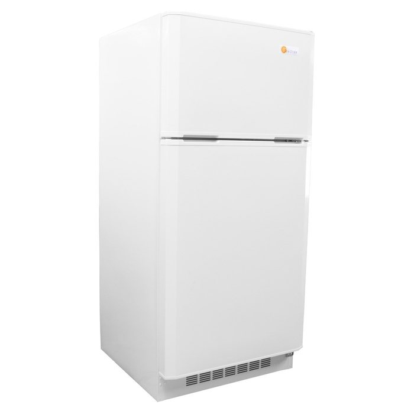

Sunstar chest freezers and refrigerators built to run off a solar battery bank. Real cold storage for homes, cabins and farms with no grid power.

Prices and stock are in our online store. Want it sized, quoted and installed? Call 574-218-1973.
Run straight off a 12 or 24 V battery bank. No inverter needed.

12/24 V, typical draw 90 W. One thermostat makes it a freezer or a refrigerator.
See it in our store →
12/24 V, typical draw 105 W. One thermostat makes it a freezer or a refrigerator.
See it in our store →High-efficiency AC models that run off your inverter.

120 V, typical draw 80 W. Freezer or refrigerator with one thermostat.
See it in our store →
120 V, typical draw 95 W. Freezer or refrigerator with one thermostat.
See it in our store →16 cu ft. Runs on 12/24 V DC or 120 V AC. The top 4.8 cu ft refrigerates or freezes; the bottom 11.2 cu ft refrigerates.

12/24 V DC or 120 V AC, typical draw 40 to 110 W.
See it in our store →
12/24 V DC or 120 V AC, typical draw 40 to 110 W.
See it in our store →
12/24 V DC or 120 V AC, typical draw 40 to 110 W.
See it in our store →Yes. The DC models run straight off a 12 or 24 V battery bank with no inverter. The 120 V models run off your inverter. We size the panels and batteries to keep it cold through the night.
They ship by truck. Call 574-218-1973 for a shipping quote, or pick one up in Goshen.
Both. We design and install in Elkhart, LaGrange, Noble and Kosciusko counties, and we ship equipment nationwide.
Yes. Our shop and warehouse is at 3645 S 1200 W, Goshen, IN 46528, open Monday to Friday, 7:00 AM to 3:00 PM. Saturday by appointment.
Yes. Installers and resellers can apply for tiered dealer pricing: entry wholesale, wholesale and distributor. Call 574-218-1973 or use the form on our home page.
Tell us what you want to run. Ten minutes on the phone usually settles the size.